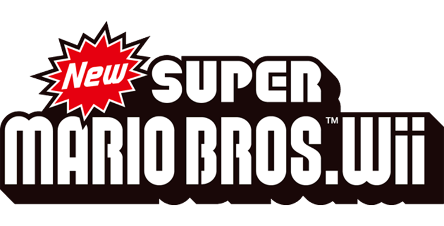
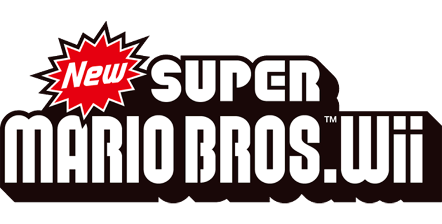

Da dove nasce?
 

Super Mario Bros. Extreme Adventure è un fan-made creato dal Team Alternativeancora in
sviluppo dall'estete 2023. La base del fan-made gira attorno ad un
altra, ovvero Newer Super Mario Bros Wii ideato dal Team Newer nell'anno
2013
che utilizza come base New Super Mario Bros Wii (gioco originale) ideato da Nintendo nel
lontano
2009 per Nintendo Wii, aggiungendo un nuovo
sistema di renderizzazione delle
Mappe all'interno del gioco
accompagnate da nuovi livelli completamente diversi rispetto al
gioco originale. Possiede
anche una grafica e gestione dell'interfaccia anche essa diversa con anche
l'aggiunta
di un nuovo potenziamento per Mario e gli altri personaggi: La Tuta Martello,
che è stata
portata all'interno del gioco da un altro completamente diverso:
Super Mario Bros 3 ideato nel 1988 per il
NES dove fece la sua prima
apparizione.
Contenuto del fan-made (SMBEA)
Super Mario Bros. Extreme Adventure è un fan-made creato dal Team Alternativeancora in
sviluppo dall'estete 2023 ed utilizza lo stesso sistema di base
utilizzato in Newer Super Mario Bros Wii.
All'interno del gioco sono presenti
4 Mondi (3 + 1 in più, Bonus) dove in ognuno viene trattato un tema reale
della vita
con l'aggiunta di un pò di fantasia. I temi dei rispettivi mondi sono:
Ogni mondo possiede 15 livelli tra cui 3 di essi sono livelli Bonus sbloccabili tramite una
Bandiera Rossa ed è stato
introdotto un nuovo potenziamento per Mario e gli altri personaggi: La Tuta Nota,
che è stata utilizzata nel
Mondo 2 essendo basato sulla Musica. Non è ancora prevista una data di rilascio
ben precisa, ma è certo che
la Versione Completa del gioco venga rilasciata entro il 2024.
All'interno del gioco sono stati
introdotti molti Sprites provenienti da uno degli utlimi titoli
della serie di Mario: Super Mario Bros. Wonder
Autore: Simone Furnari (Mone, dal Team Alternative)
teamalternative.info@gmail.com